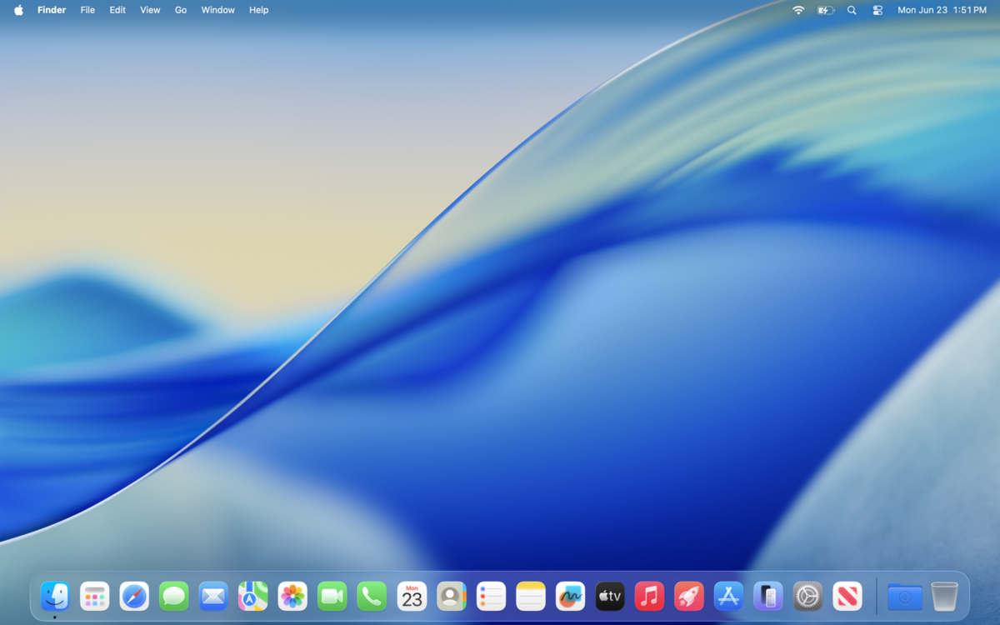
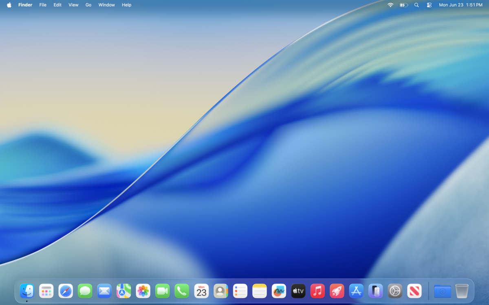
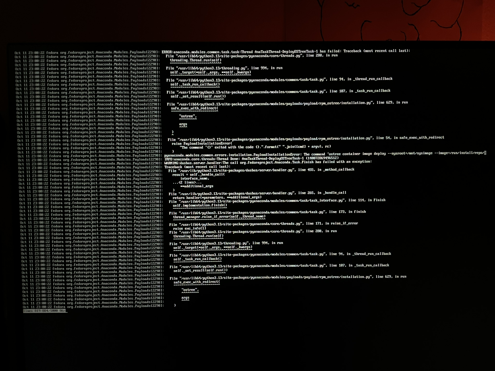
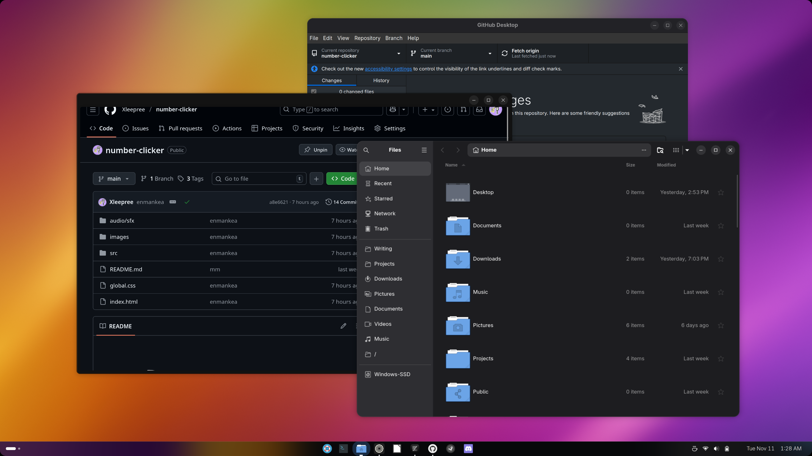
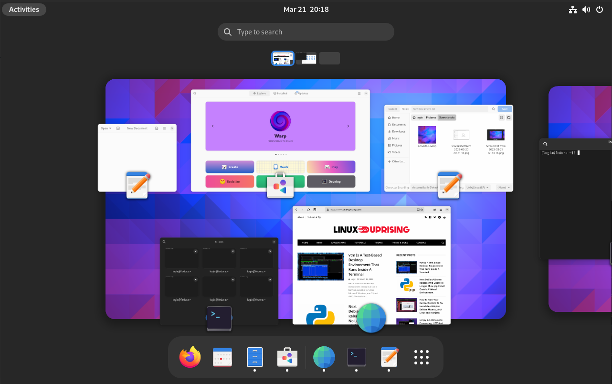
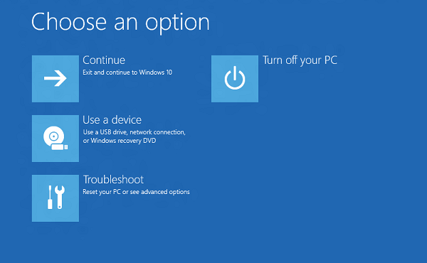
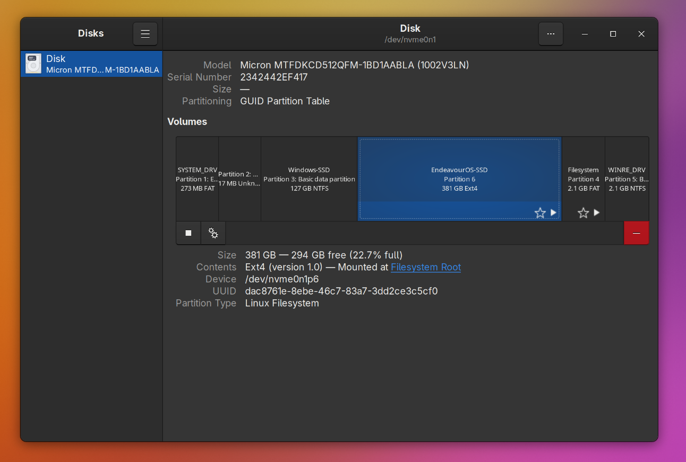

linux
11-11-2025
I'm way too far into this, aren't I?

You are viewing this webpage on an operating system.
If you're on a desktop, chances are it's Windows or macOS. If you're
on mobile, chances are it's on Android, iOS, or iPadOS.
I am viewing this webpage on an operating system called Linux.
And I really like it over here!
I'm on the EndeavourOS Linux distribution using GNOME. If you're
completely new to Linux, you may have not understood a word I just said.
But if you read the rest of this, I can show you why I like Linux so much.
comparing desktop operating systems
 


Windows, macOS, and Linux (Ubuntu)
There are pretty much three mainstream desktop operating systems, somewhat universally
recognized by developers. Each have their pros and cons:
- Windows: The most widely used desktop operating system. Most software and games are developed Windows-first because that's what everyone else does. It supports pretty much all software. But, does that mean it's good? No. You can see my little rant in the microsoft blog post.
- macOS: The second most widely used desktop operating system. It is developed specifically for Apple's Macs, which makes it really good... on Macs. And only Macs. Software support is secondary, especially for games. Gaming on macOS is still mostly a joke. But, besides that, it isn't that bad.
- Linux: The third most widely used desktop operating system, however not widely known. It is Unix-like, like macOS. It is open-source, meaning you can go look at the source code and contribute to it. Software support is hit or miss. Gaming has become much more viable on Linux after Valve's Proton. What does Linux provide compared to the other two operating systems?...
freedom!
Linux is incredibly customizable. You own your computer. It won't get in your way.
You can tweak every setting to your liking.
You can also nuke your entire drive, because,
well, you own your computer. Some people have had to learn that the hard way.
You can also be rest assured Linux won't spy on you or be invasive. It is open source,
which makes it seriously unlikely for it to spy on you, because people would obviously
not like it. Microsoft could never.
how i use linux
suffering Trying to install Bazzite :D
I first tried Linux some time this summer. Ubuntu. It was good. Stuff worked. And then I went
back to Windows for a bit because I didn't know how to get a thing to work.
Later, I was thinking of trying Linux again. ZorinOS. And so I did, but I kept all of my games on
Windows. And it felt kind of useless, because all of the coolio of Linux went away when I
wanted to play a game. So I went back again, to Windows.
Recently, I was annoyed by Windows forcing updates. I paused updates so I could just go to UEFI
without having to update. And it updated anyway. It took an hour. I was... ticked.
So I tried installing Bazzite. The installer just didn't work and I still don't know why. I installed
KDE Neon and used it for a few weeks before almost losing all of my data trying to extend the size
of its partition on my SSD. So then I tried CachyOS, and I used it for a few days.
Then, I tried EndeavourOS. Now, I use EndeavourOS. It is unknown how long this will last, but right now,
this is great.
You may be confused about all of the things I just said. Ubuntu, ZorinOS, Bazzite, KDE Neon, CachyOS,
EndeavourOS. These are Linux distributions.
linux distros
me on EndeavourOS vreeehehe
Linux, by itself, is just a kernel. No desktop environment or additional programs. It is not a
complete operating system per standards. This is where Linux distributions come in.
A Linux distribution is a complete operating system that includes the Linux kernel for its
functionality. It can include a desktop environment and additional programs and libraries
in addition to the kernel. You could say every distro is a separate OS, but usually
the Linux kernel is enough to group it all into one.
For example, distros including and based off Debian can use .deb packages as apps. Other distros
cannot. I use EndeavourOS, which is based off Arch and not Debian, and so .deb packages are
useless to me.
But both Debian and EndeavourOS can use .tar.xz archives as apps, because both are Linux.
Different Linux distros are for different applications and people. They can include a different
desktop environment, the user interface of the distro. Or catered toward different people, like
Ubuntu vs. Arch Linux. Ubuntu is easy to install and get started and Arch Linux is notoriously
complicated to just install.
desktop environments
Desktop environments are more important than you think. Without a desktop environment, all you have is a command line. A command line is not an adequate desktop operating system. There are many different desktop environments for Linux, with pros and cons. I've tried some.
GNOME (i use this one)

This is the desktop environment included with most distros. It is very popular.
The desktop shell is macOS-like with a dock, top panel, and apps launcher similar to the
Launchpad. It has a unique desktop switcher called the Overview which reveals the dock.
It has an Extensions store where you can find extensions on a website and change things about
your desktop.
Personally, I really like the app design, when you compare it with something like KDE...
KDE Plasma

This is included with many distros and is very customizable.
By default, it has a Windows-like design but because of how customizable it is,
you can make it like macOS too. In the settings, you can personalize a ton of things.
The customizability through GUI is really nice but I don't really like the app design.
LXQt

A lightweight desktop environment. It is designed as "being a classic desktop with a modern look and feel." (quoted from lxqt-project.org). It is included on distros designed to be lightweight, like Lubuntu.
XFCE

Another lightweight desktop environment. It is designed to be low on resources while remaining visually appealing and user friendly. It also prioritizes adhering to standards like those defined at freedesktop.org. Distros like Linux Mint, Debian, and Fedora have an option for XFCE.
you should try linux too
If you use Windows or macOS, you should try using Linux. I don't know what apps you use and their
support on Linux, but you should give it a try in your free time to see if you like it.
I highly recommend you switch to Linux if you're using Windows 10. Windows 10 has been killed
off and now everyone is scrambling to find something else. Linux is great for that.
And, especially if your computer doesn't support Windows 11, I can almost completely assure you
Linux is the best option for you.
Linux is liberation.
getting started with linux
This is for people with Windows computers. For macOS, there is Asahi Linux,
however I have never tried it and can't really give advice.
So, let's say you want to try Linux for the first time. There are many things that
can go wrong. But first, you must choose a distribution.
My first was Ubuntu. I chose Ubuntu because it's
popular and was the first thing that came to mind when I thought "Linux distro".
And it's fine. It's backed by the company Canonical. Some other beginner-friendly
distros are Mint, Pop!_OS, and ZorinOS.
Mint is based off Ubuntu and uses a different
desktop environment called Cinnamon. For people coming from Windows, it may be easier to
use Mint because of Cinnamon's Windows-like design.
Personally, I have never used it.
Pop!_OS is also based off Ubuntu and it uses a modified
version of the GNOME desktop environment, known as COSMIC. It is developed by the computer manufacturer
System76, and is primarily built for those computers, but it also works well on most computers. I
tried it once and COSMIC wasn't really for me. Though, looking back, COSMIC wasn't that bad.
I just didn't like the workspace switcher. Besides that, it was nice.
ZorinOS is... also based off Ubuntu.
...why does everything have to be based off Ubuntu?
It's polished. The desktop environment is interesting. It has many different
styles. You can choose Windows-like, macOS-like, recently elementaryOS-like,
and more. Its desktop environment is quite customizable. It was my
second Linux distro after Ubuntu.
I liked it.
Any of these distros, really, is a good choice. There are others, I'm sure, but these are what I
recommend. So, how do you install these?
installing a linux
Every distro has different installation instructions, but how do you boot into one?
After acquiring and verifying the ISO for a distro, you want to flash it to a USB drive.
There are two tools that I have tried that can do this. I use Rufus,
but it has a few extra options compared to balenaEtcher that
we can just not deal with for now.
In balenaEtcher, you put your downloaded ISO into it and select your USB to flash
to. Just wait a little, and you should have a bootable ISO.
The proper way to boot into your USB for most systems is go into your UEFI/BIOS
and change the boot order so the USB is top priority. Then as you reboot, you
should automatically boot into it and continue installation steps.
On my laptop, you hold F2 while booting to go into the UEFI. Booting into UEFI/BIOS
is done differently for other computers.
(What used to be) my UEFI boot options
But I have a better, quicker way, if you find a distro won't boot or you don't like it and you want to quickly try something else out. Instead, you can just boot into Windows Recovery Mode by pressing Shift and restarting. From there, you can just boot into the USB. This saves a lot of time.
Windows 10 Recovery Mode
how to not kaboom your drive
Your drive, solid-state or hard disk, has important data on it. Most likely. My SSD has all of my projects, my notes, screenshots, and my novel. It would be a real shame if I didn't know what I was doing in the Mint installer and completely wiped my SSD.
my SSD with my Linux partition that has all my stuffs selected
It is really easy to do that, though. You just need to select one option. But
what you most likely want to do, if you haven't backed up your data somewhere
else (you really should anyway), is dual-boot even if you don't plan to use
Windows. Most distros do not include an automatic option to install beside
Windows.
Instead, it requires manual partitioning in the installer. This can be daunting. Generally,
what you want to do is:
- Create a root (/) partition from empty space mounted at /. This is the root filesystem. You don't want this partition to take up the all of the empty space previously reserved because:
-
Also create a boot partition, usually mounted at /boot, /boot/efi, /efi, etc. This
is required for your Linux to boot, or else you will have an unbootable system which
is basically a dud.
Sometimes you can use the existing Windows EFI partition but in my expierence most distros will complain about the partition being too small for the bootloader. - Use some common sense. Apply this knowledge and also look around for any hints. For example, if you exit the partitioning screen and it complains about something being missing or incorrectly mounted, follow those instructions. It isn't the end of the world.
- Be extremely careful. Remember, if you do something wrong the consequences can be grand.
All of this can vary depending on what distro you are installing. But this should be enough to make sure you don't nuke your drive. But also, pro tip: Please back up your important files somewhere else. Even if you are sure that you know what you are doing, anything can happen. It's easy and it makes it impossible to permanently lose all of your data.
pro tips
- Use official documentation first, not obscure forums. If you're having issues, chances are that has been officially documented and you don't need to search "blahblah is broken waaa reddit". Forums are helpful too, but treat them as secondary.
- Learn what a terminal is and how to use it, if you haven't already. It is one of the most powerful tools in Linux. And it's also kind of neccessary for most distros, although some are designed to be completely operable through GUI so one will never need to do anything in the terminal.
- Translation tools for Windows applications do exist. For games, there is Valve's Proton for Steam that works really well. For other things, there is the Wine translation layer which should be able to make many Windows apps work on Linux.
- Owning your system can be a pro and con. Don't do things to your distro that it wasn't designed to do or doesn't have the capacity to do. I saw a video where one guy tried to use KDE Plasma on Linux Mint. It was broken, because Mint isn't designed for that all.
conclusion
Linux is the operating system of all time. And I'm probably way more into it than what's healthy.